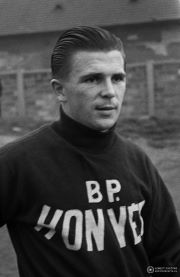
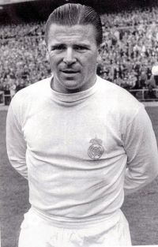
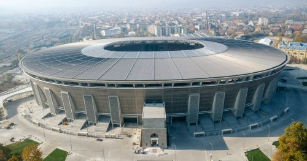

Gyermekkora
A legismertebb magyar labdarúgó 1927. április 1-jén, Budapesten született id. Puskás Ferenc és Bíró Margit gyermekeként. A család Puskás Öcsi születése után Kispestre költözött, ahol az édesapa labdarúgóként szerződött le (id. Puskás Ferencről itt talál további információt.). Öcsiék közvetlenül a pálya mellett laktak a szerény szoba-konyhás szolgálati lakások egyikében. A szomszédban nevelkedett a másfél évvel idősebb Bozsik József, aki később a Kispestben és a válogatottban is együtt emelkedett Puskással a világhírig.
A tehetséges labdarúgó a Kispest kölyökcsapatában játszott, a foci igazi szerelmévé vált, a világháború alatt sem adta fel a sportot. Puskás Ferenc 16 éves volt csupán, amikor a Kispest NB I-es felnőtt csapatába került. A Kispestből Budapesti Honvéd, az ország legnagyobb klubja alakult, Puskás Öcsi pedig a háború után meghívást kapott az újra összeálló válogatottba is.

Az aranycsapat
Puskáshoz méltóan a válogatottban játszott első meccsén máris gólt rúgott Ausztria ellen, a meccset 5:2-es győzelemmel zárták. A focistát számos külföldi csapat, köztük a Juventus és a Manchester United is próbálta elcsábítani, ő azonban nem fogadta el az ajánlatokat. 1950-ben Puskás Ferenc egész életen át tartó házasságot kötött szerelmével, Hunyadvári Erzsébettel.
A válogatott, Puskással az élén Helsinkiben olimpiai bajnoki címet nyert 1952-ben, ami az Aranycsapat első nagy győzelme volt. Éppen ebben az évben született meg a focista és feleségének gyermeke, Anikó.
A Grosics, Buzánszky, Lóránt, Lantos, Bozsik, Zakariás, Budai, Kocsis, Hidegkuti, Puskás és Czibor alkotta aranycsapat 1953-ban 80 ezer néző szeme láttára győzedelmeskedett az olasz csapat felett a római Olimpiai Stadionban az Európa-kupán. A 3:0-ás végeredményhez Puskás Öcsi 2 góllal is hozzájárult.
Az évszázad mérkőzése és az 1954-es vb
Az Aranycsapat sikere tovább folytatódott, meccseiket sorra nyerték. 1953. november 25-én a hazájában 90 éve veretlen angol válogatottat 6:3-ra győzték le. Nem hiába tartotta Puskás ezt a mérkőzést élete legszebbikének, hiszen legendás gólja is ezen a meccsen született, amikor is egy utánozhatatlan mozdulattal kicselezte az angol Billy Wrightot. Az 1954-ben, a Népstadionban megrendezett visszavágót a magyar válogatott 7:1-es győzelemmel zárta.
Azonban 1954 és a svájci világbajnokság váratlan fordulatot hozott a csapat számára. Az esetről máig számos szóbeszéd kering. A csoportmérkőzések során a csapat rendre győzelmet aratott, majd a németek elleni mérkőzésen a sztárfocista bokája megsérült, így több meccset is kihagyott. A németek elleni berni döntőben újra pályára állt, és gólt is szerzett. Így a válogatott az első félidő elején 2:0-ás állással megkaparintotta a vezetést. A németeknek csupán 10 perc kellett a kiegyenlítésre, majd a meccs sokáig gólok nélkül folytatódott tovább.
Az aranycsapat 2:3-ra elveszítette a döntőt a németekkel szemben, Rahn 84. percben szerzett góljának köszönhetően. Puskás az utolsó percben ugyan gólt lőtt, de azt a bíró nem adta meg. Lesre hivatkozott, ugyanakkor a kamerák felvételei bizonyítják a gól érvényességét. A későbbiekben felmerült a feltételezés, miszerint a német játékosok doppingszereket használtak a felkészülés során. Az eseményeket követően pesti zavargások indultak, a rajongók felháborodása óriási volt. A magyar válogatott legnagyobb sikere a mai napig ez az 2. helyezés a világbajnokságon, azonban az akkori közvélemény szerint ez hatalmas kudarc volt.
Emigrálás és a Real Madrid

A Budapesti Honvéd Spanyolországba utazott egy mérkőzés miatt az 1956-os forradalom kitörésekor. A csapat vereséget szenvedett az Athletic Bilbaoval szemben, a meccs után azonban a magyarországi állapotok miatt nem tértek vissza az országba. Puskás felesége és gyermeke csatlakozott a csapathoz, ők az országot illegálisan hagyták el.
Az ezt követő időszakban az Aranycsapat részt vett még pár külföldi mérkőzésen, majd a futballisták egy része visszatért az országba. Puskás, és még néhány játékos azonban külföldön maradtak, így a csapat végleg feloszlott.
Az emigráló magyarokat azonban 18 hónapos eltiltással sújtotta a FIFA. A Puskás család Ausztriában, Spanyolországban és Olaszországban töltötte napjait.
A nehéz időszak után a világhírű futballista lényeges súlyfelesleggel küzdött. Ekkor jött a sorsfordító felkérés a Real Madrid csapatától, ahonnan Östreicher Emil, a Honvéd korábbi szakosztályvezetője, az akkori Real Madrid elnökének munkatársa kereste fel.
Puskás leszerződött a klubbal. Harmincegy évesen újra megfeszítette minden erejét, leadott tizennyolc kilogramm súlyfelesleget, és a kezdeti nehézségek ellenére helyet követelt magának a világklasszisokkal teli Real Madridban. Hihetetlen rekordokat döntött meg, majd állította fel sajátjait: az 1960-as Bajnokok Ligája-döntőn négyszer, az 1962-es fináléban háromszor volt eredményes, Magyarország után Spanyolországban is négyszer nyert gólkirályi címet, s az összesített teljesítményt nézve minden idők legsikeresebb góllövője lett és maradt az a mai napig. Négyszeres spanyol gólkirályként 1961-ben megkapta a spanyol állampolgárságot, majd a spanyol válogatott tagja lett. Utolsó nemzetközi válogatott meccsét 1963. október 23-án Anglia ellen játszotta, amelyet a britek 2:1-re nyertek meg. A legendás Puskás Ferenc 1966-ban visszavonult.
Visszavonulás után és emlékezete
Puskás Öcsi edzőként kezdett tevékenykedni. Számos csapattal dolgozott, a görög Panathinaikosz amatőr csapatot egészen a Bajnokok Ligája döntőjéig juttatta. A Panathinaikoszról még többet megtudhat ide kattintva.
1991-ben Puskás végleg hazatért. Kispest díszpolgára, a Magyar Labdarúgó-szövetség utánpótlás, majd nemzetközi igazgatója, később a magyar nemzeti válogatott szövetségi kapitánya lett. Ezt követően is a legnagyobb kitüntetésekkel dicsérték munkásságát
Az egészségi állapota 2000-ben kezdett romlani, folyamatos orvosi ellátásra volt szüksége. 75. születésnapján az egykori Népstadion Puskás Ferenc Stadionná keresztelődött át. Puskás Ferenc, a Nemzet Sportolója 2006. november 17-én hunyt el, december 9-én a nemzet halottjaként a budapesti Szent István-bazilikában helyezték végső nyugalomra. Számos intézmény, emlékhely, és a FIFA góllövői díja is viseli az elképesztő eredményeket elért, hihetetlen utat bejárt Puskás Ferenc nevét.

Sikerei
- Ötszörös magyar bajnok (1950, 1950 ősz, 1952, 1954, 1955)
- Világbajnoki ezüstérmes (1954)
- Olimpiai aranyérmes (1952)
- Európa-kupa győztes (1953)
- Ötszörös spanyol bajnok (1961-1965)
- Spanyol kupa-győztes (1962)
- Háromszoros BEK győztes (1959, 1960, 1966)
- Interkontinentális kupa-győztes (1960)
Ugrás a lap tetejére